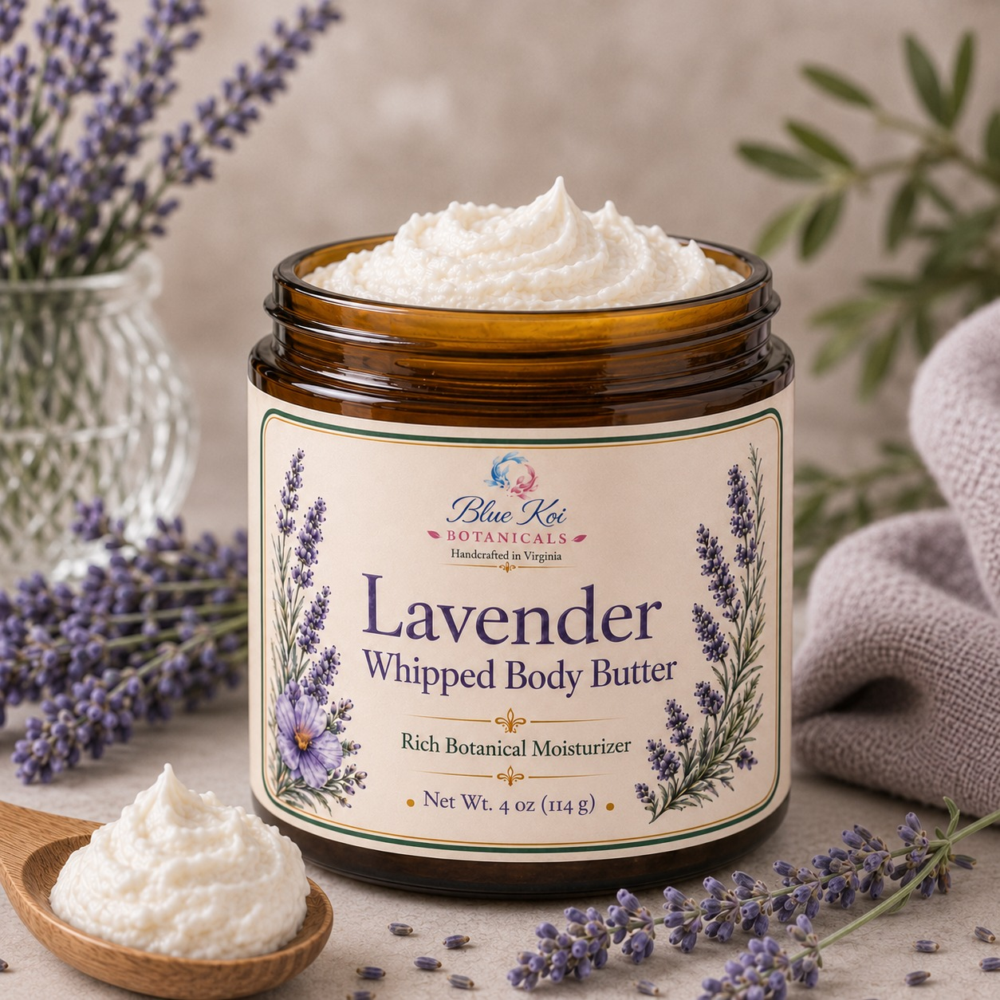
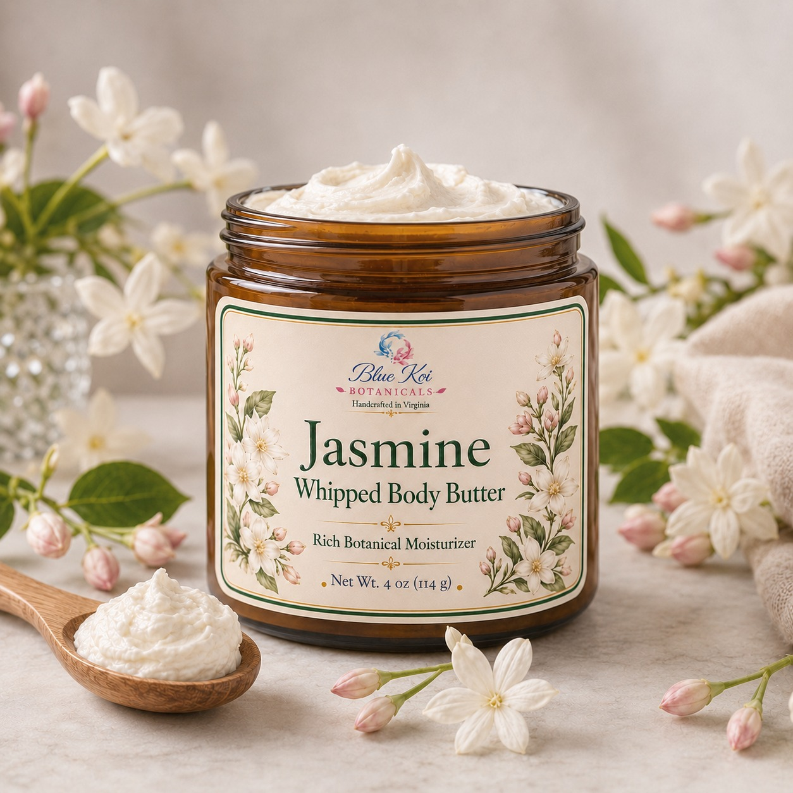
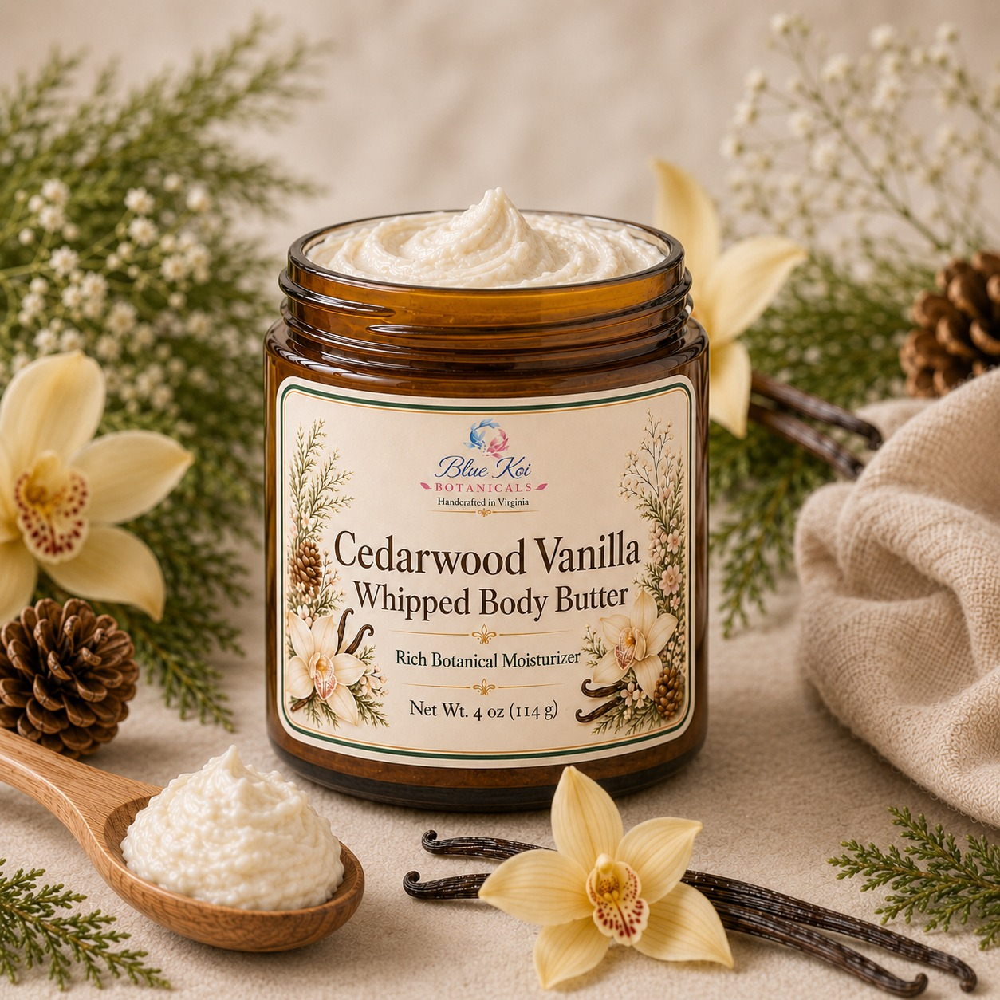
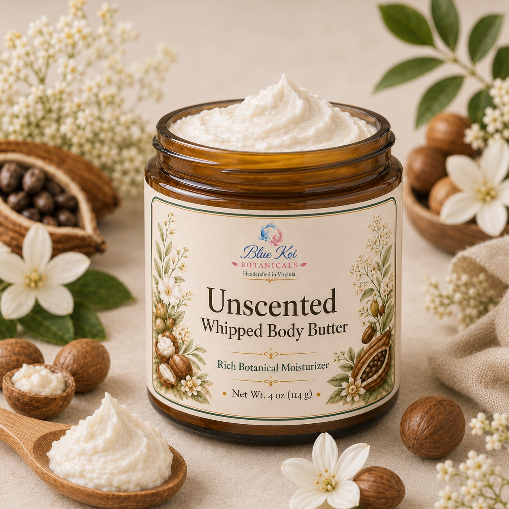

Rich moisturizers
Body Butters
As the most indulgent offerings in the Blue Koi Botanicals line, our whipped body butters provide a rich, cushiony moisturizing ritual with a smoother, less greasy finish from arrowroot powder. We whip dense, premium ingredients including shea butter, cocoa butter, meadowfoam seed oil, jojoba oil, coconut oil, beeswax, vitamin E, and arrowroot into a soft, substantial texture that feels luxurious on dry skin. Each 4 oz jar is designed to look beautiful on a vanity and feel polished from the very first scoop.

Lavender Whipped Body Butter
$32Rich shea-and-meadowfoam moisture with arrowroot powder for a plush feel that does not drag greasy.
Explore product →
Jasmine Whipped Body Butter
$32A luxe floral body butter with jasmine, ylang ylang, and arrowroot powder for rich moisture with a cleaner finish.
Explore product →
Cedarwood Vanilla Whipped Body Butter
$32A warm, cozy body butter that makes dry-feeling skin feel cushioned, smooth, and cared for.
Explore product →
Unscented Whipped Body Butter
$32The rich body butter experience without added scent—dense, plush, and softened with arrowroot powder.
Explore product →